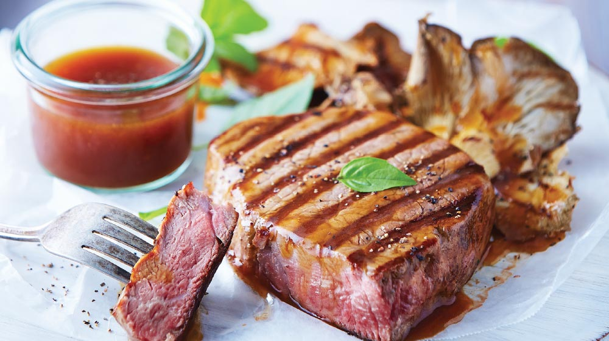

All recipes
Fillet

Fillet medallions in morita are a classic preparation within traditional Mexican food.
Here we present you a simplified version, yes, without losing that delicious flavor that you like so much.
Ingredients:
- 1/4 cups of salsa, Huichol Traditional®
- 2 cups of water, or the amount needed
- 2 ball tomatoes
- 1/2 white onions
- 6 morita chili peppers, seedless
- 1 clove garlic
- 1 teaspoon salt
- 1 teaspoon of pepper
- 1 kilo of beef fillet, (medallions)
- 1/2 cups of oil
Steps:
- Cook the tomatoes, onion, chili peppers and garlic clove in hot water until they soften.
- HBlend with the sauce and a little of the cooking water, salt and pepper.
- Seal the medallions in a pan with a little oil, pour the sauce over them and finish cooking.
- Accompany with refried beans and serve.